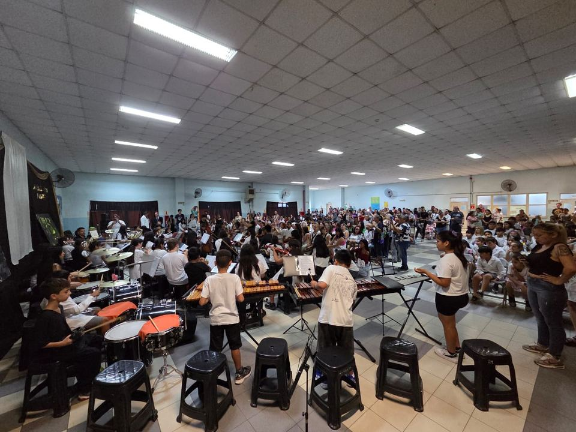
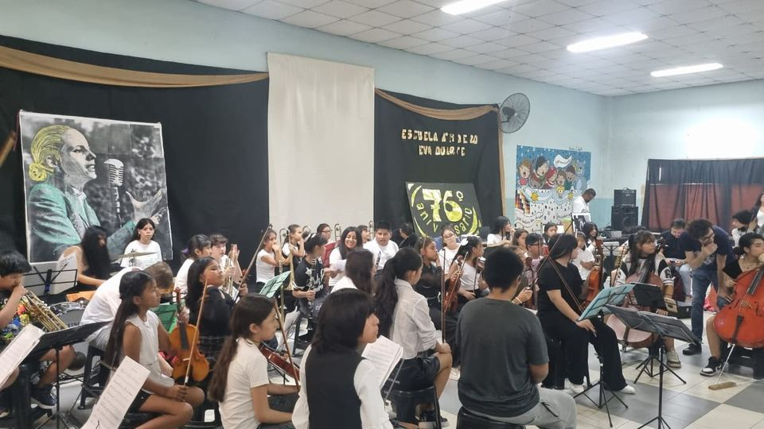
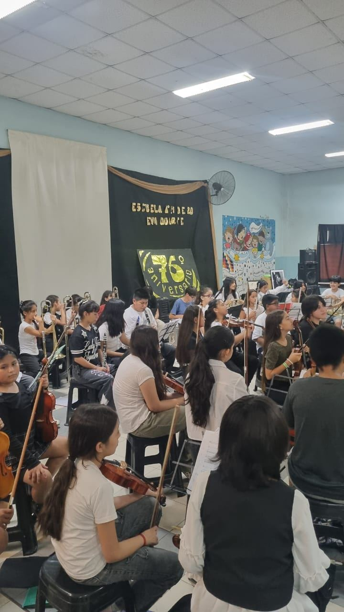
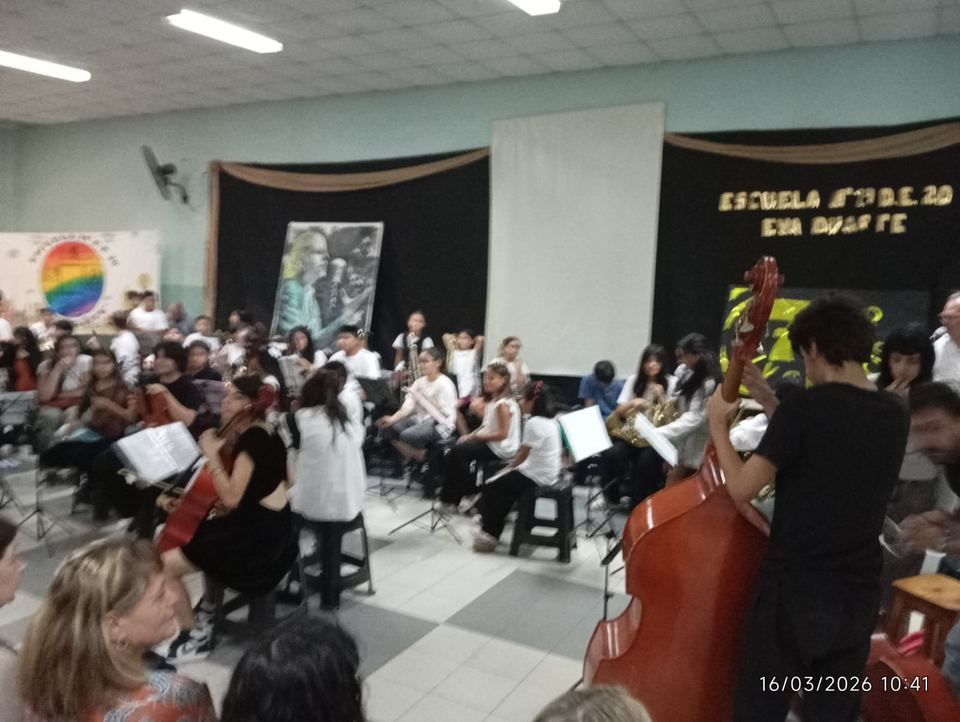
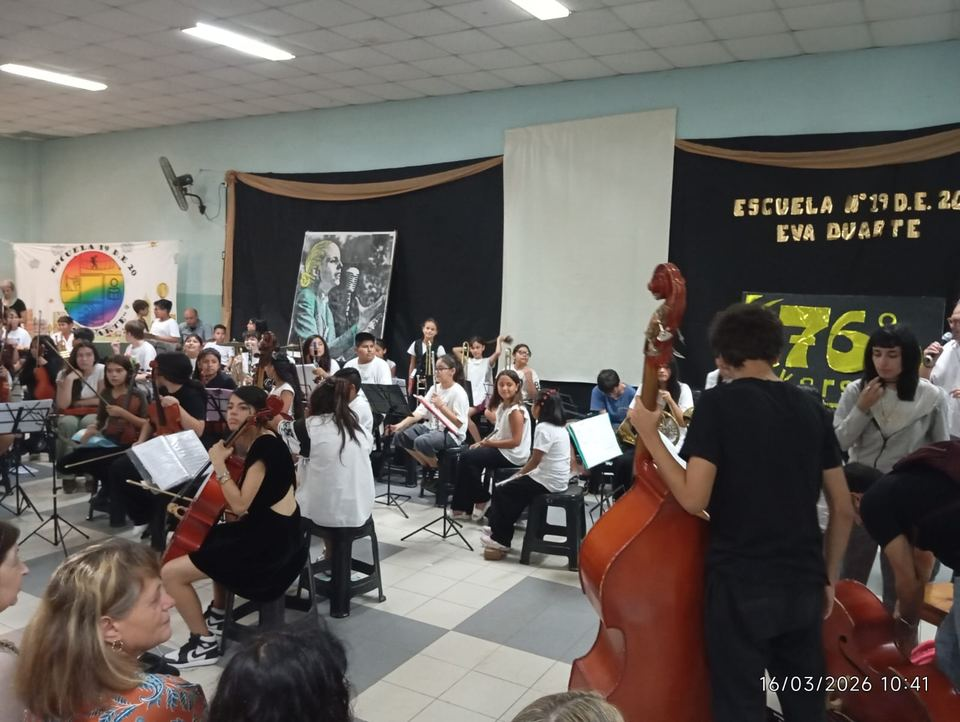

Una participación central de la orquesta en su propia escuela
Este concierto tuvo un valor especial porque la orquesta participó de una jornada muy importante para la escuela y para toda la comunidad educativa. La música acompañó un encuentro cargado de memoria, pertenencia y presencia barrial, con chicos y chicas ocupando un lugar central desde el escenario.
Para la orquesta, además, no fue una presentación cualquiera. La Escuela Nº 19 Eva Duarte es también el lugar donde se ensaya, se estudia y se comparte semana a semana. Por eso tocar allí tuvo una fuerza particular: los alumnos y alumnas hicieron sonar en su propia casa todo el trabajo que vienen construyendo junto a sus profes.
Las fotos del día muestran con claridad esa dimensión colectiva: instrumentos, familias acompañando, vecinos presentes y una escuela convertida una vez más en espacio de encuentro. Lo musical y lo comunitario aparecieron juntos, como parte de una misma experiencia.
Así, esta jornada quedó incorporada al historial de la orquesta no solo por la música, sino también por lo que representa: una escuela que reafirma su identidad y una orquesta que forma parte real de esa historia.
Por qué este concierto fue tan significativo
- La orquesta tuvo una presencia principal dentro de la jornada y de la celebración.
- El evento ocurrió en la misma escuela donde la orquesta ensaya cada semana.
- Participaron chicos y chicas, familias, docentes y comunidad educativa.
- El barrio acompañó una jornada vinculada a la escuela, la pertenencia y la memoria compartida.
Cuando la orquesta toca en su escuela, no solo ofrece un concierto: también devuelve a la comunidad una parte del esfuerzo, del aprendizaje y del trabajo compartido de todo el año.
Una escuela acompañada por su gente
El encuentro reunió a docentes, alumnos y alumnas, familias y vecinos del barrio en una celebración atravesada por la participación comunitaria. Esa presencia le dio al concierto un clima propio: cercano, emotivo y con mucho sentido de pertenencia.
La orquesta acompañó ese clima desde un lugar central, haciendo visible que la música también puede ser una forma de memoria compartida y de construcción comunitaria.
La actividad continúa con ensayos semanales
Aunque este concierto ya forma parte del historial, el trabajo de la orquesta sigue en marcha. Los ensayos continúan en la escuela y próximamente se anunciarán nuevas presentaciones para este año.
Quienes quieran acercarse o consultar por la participación de nuevos chicos y chicas pueden escribir por Instagram o acercarse a la escuela en los días de ensayo.
Algunas imágenes del registro





Registro del evento
Acceso a una publicación del evento compartida en redes, con imágenes y clima de la jornada.
Abrir reelSeguir a la orquesta
Para próximas fechas, novedades y registros cotidianos de ensayos, conciertos y actividades.
Abrir InstagramMás registros
El canal de YouTube reúne videos y materiales que ayudan a seguir compartiendo el trabajo de la orquesta.
Abrir YouTube